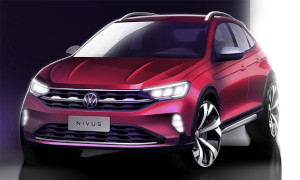
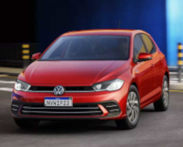
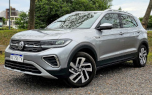
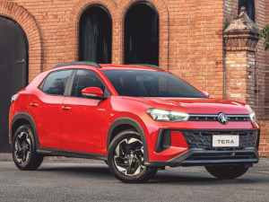
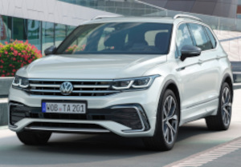
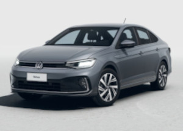

Nivus
O Volkswagen Nivus é um SUV compacto produzido pela Volkswagen que se destaca pelo design moderno e esportivo. O modelo combina características de SUV com linhas de cupê, oferecendo uma aparência dinâmica e elegante. Ele conta com motor turbo 1.0 TSI, que pode gerar cerca de 128 cv de potência, aliado a um câmbio automático de seis marchas, proporcionando bom desempenho e eficiência no consumo de combustível.

Polo
O Volkswagen Polo é um carro hatch compacto produzido pela Volkswagen, conhecido por seu design moderno, bom desempenho e tecnologia. O modelo possui motores eficientes, como o 1.0 MPI e o 1.0 TSI turbo, que podem chegar a cerca de 116 cv de potência, oferecendo bom equilíbrio entre desempenho e economia de combustível.

T-Cross
O Volkswagen T-Cross é um SUV compacto produzido pela Volkswagen que se destaca pelo bom espaço interno, tecnologia e posição de dirigir mais alta. O modelo possui design moderno e robusto, sendo voltado tanto para uso urbano quanto para viagens.

Tera
O Volkswagen Tera é um SUV compacto da Volkswagen desenvolvido para o mercado brasileiro. O modelo apresenta design moderno e robusto, com linhas marcantes e teto bicolor, oferecendo uma aparência esportiva e atual.

Tiguan
O Volkswagen Tiguan é um SUV médio produzido pela Volkswagen, conhecido pelo bom espaço interno, conforto e alto nível de tecnologia. O modelo possui design moderno e robusto, sendo indicado tanto para uso urbano quanto para viagens em família.

Virtus
O Volkswagen Virtus é um sedã compacto produzido pela Volkswagen, conhecido pelo bom espaço interno, conforto e tecnologia. O modelo apresenta design moderno e elegante, sendo uma opção popular para quem busca um carro familiar com bom desempenho.